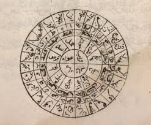
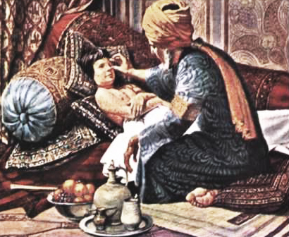
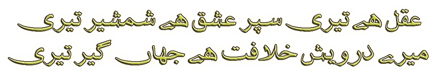

Welcome to The Top of Times
Here, you will discover the hidden secrets of the Golden Age of Scientific and Cultural development
of mankind. The development and technology we see today in the world was impossible without the basic ideas given by Muslim Scintists.
Let's get into the Galaxy of Shining Stars !
|  |
 |
 |
|
M A T H |
M E D I C I N E |
C U L T U R E |
PHILOSOPHY |
Islam is a complete Code of Life. It has magnificent history with two fundamental sources of teachings i.e. Quran and Sunnah. Muslim Caliphs established civilizations on these two pillars. 8th to 14th Century A.D. is considered as the Golden Period of Islamic History and it was ruled by Caliph Harun Al-Rashid (786 to 809 A.D.). This Era is called the Golden Islamic Era because Muslims were at the peak in every field of life and they formed the most sophisticated and modern civilization in the world. This era has its roots from Abbasid Dynasty.
|
Allama Muhammad Iqbal, the man who presented the idea of Pakistan, the poet of east, gave message to the next generations through his poetry. |
|

Decline of Muslim Glory
Muslims had a glorious history. The Eras of Rashidun Caliphate, Ummayad Caliphate, Abbasid Caliphate and Ottoman Caliphate after the death of Holy Prophet (S.A.W.) produced many scientists, scholars, intellects, philosophers, artists and poets who completely changed the world through their constructive and divine approach of minds.
Unfortunately, today, we feel proud to say that we are Muslims. But, our deeds, our intentions and our priorities do not reflect the image of a"Muslim" that it should. We feel proud to follow Western Trends but Hesitate to follow Sunnah. We are in a dire need of some serious sort of Leader who is a follower of Islamic teachings and can lead us through the moral, spiritual and social challenges we are facing today.